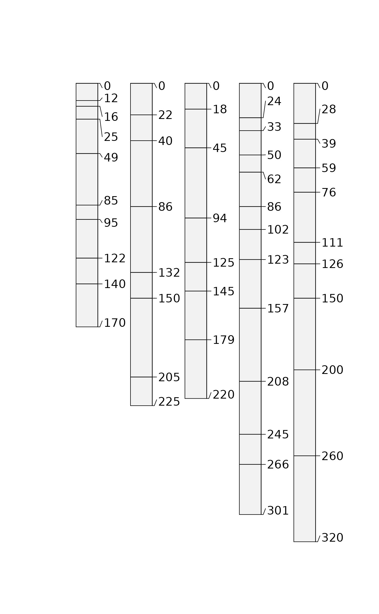
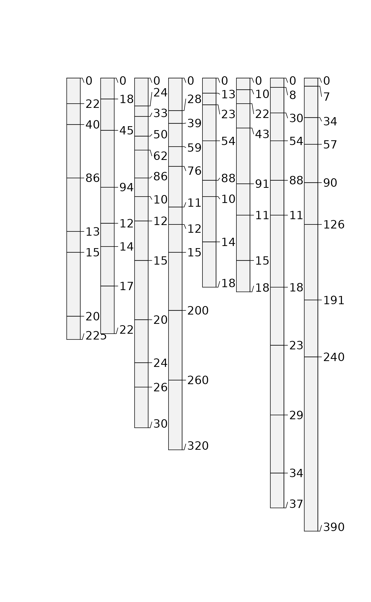
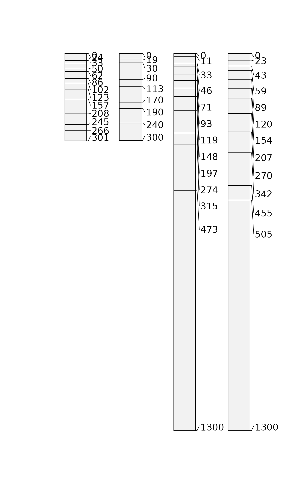

This function is used to subset SoilProfileCollection objects using
either site-level or horizon-level attributes, or both.
Details
The s argument supplies a fully-quoted search criteria for matching
via site or horizon-level attributes. The h argument supplies a fully-quoted
search criteria for matching via horizon-level attributes. All horizons
associated with a single horizon-level match (i.e. out of several, only a
single horizon matches the search criteria) are returned. See examples for
usage.
Examples
# more interesting sample data
data(sp2)
depths(sp2) <- id ~ top + bottom
site(sp2) <- ~ surface
# subset by integer index, note that this does not re-order the profiles
plot(sp2[1:5, ])

# generate an integer index via pattern-matching
idx <- grep('modesto', sp2$surface, ignore.case=TRUE)
plot(sp2[idx, ])

# generate in index via profileApply:
# subset those profiles where: min(ph) < 5.6
idx <- which(profileApply(sp2, function(i) min(i$field_ph, na.rm=TRUE) < 5.6))
plot(sp2[idx, ])
